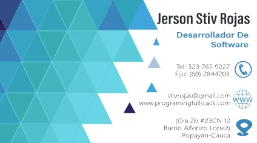
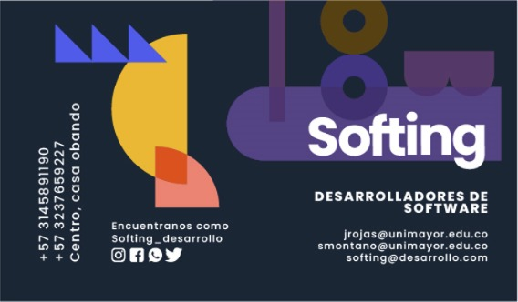
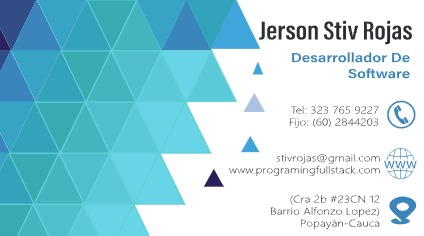
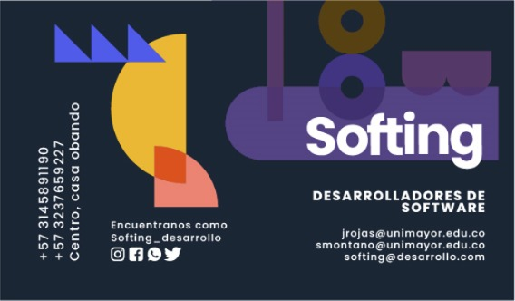

Hola, soy Jerson Stiv Rojas Gonzalez, estudiante de Desarrollo de software en la institución universitaria colegio mayor del Cauca aunque debo resaltar que soy de un pueblito llamado Oporapa-Huila, me gusta mucho viajar y conocer lugares mágicos además de compartir tiempo con mi familia. Soy un poco curioso a la hora de aprender nuevas habilidades, puesto que le dedico tiempo a aprender. Durante estos semestres he podido aprender mucho y hacer muchos proyectos de programación; es muy gratificante ver cómo he ido mejorando con el transcurso de los semestres.
 


